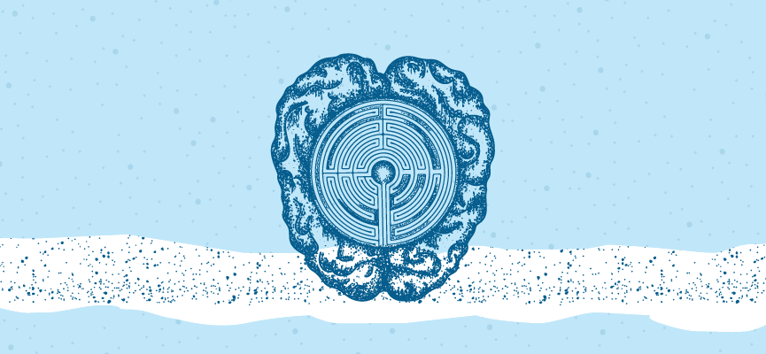
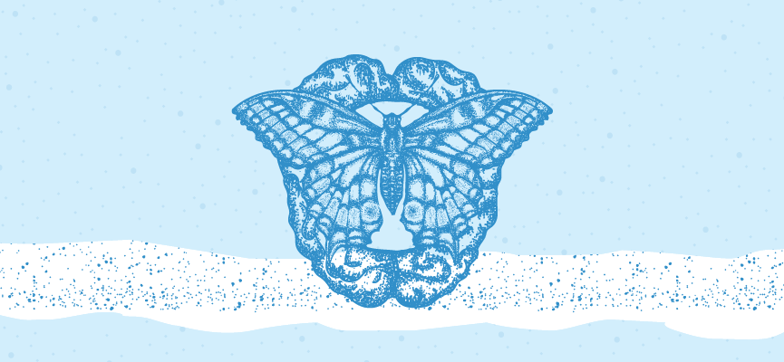
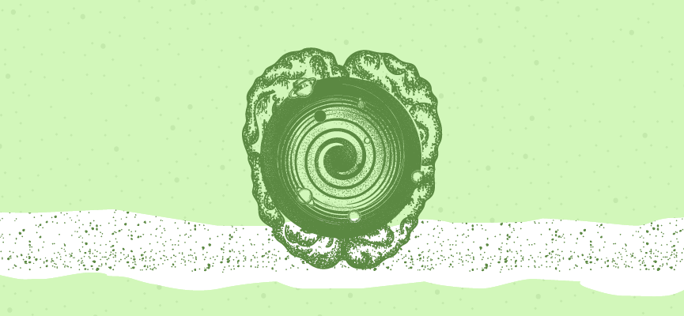

People with choleric temperament are usually tall and thin. They have a small frame, their fingers, lips, and other body parts are not large, and they are unlikely to get overweight.[37] They have a dry and warm skin color with a yellow and sometimes peachy undertone. They have a rapid pulse, are exuberant, quickly finish what they are supposed to do – usually perfectly and carefully – and speak fast. People with warm and dry Mizaj have a naturally high body temperature. Due to the dryness of their Mizaj they might suffer constipation and waste matter (urine, sweat, and feces) discharged from their bodies usually has strong odor and color. Burning in the anus and urinary tract can be common among this group. Due to the warmness in their body they digest food quickly, and as they do not have adequate amount of nutrients to provide for the energy needs of the body, they get hungry quickly. Their mouth gets dry quickly. Due to the warmness in their body which moves upward to the head, their hair grows faster. They have coarse thick black hair. Premature graying and hair loss is prevalent among these people. As they're able to think fast and act fast, they may lose some concentration abilities. They have keen senses and can easily notice the smallest changes in smells, voices, tastes, and colors. They are overly sensitive and will be easily upset or offended. They function well on low amounts of sleep. They are not very sound sleepers and are prone to suffer stress, anxiety, and sleep deprivation. They are idealist and fond of efficiency. They are also in favor of punctuality.
History
Persian traditional medicine is one of the most ancient forms of traditional medicine. In Iranian traditional medicine the excess or lack of warmness and humidity define four essential temperaments.
The Four Temperaments
|
choleric aka "warm and dry"
|
phlegmatic aka "cold and wet" |
|---|---|
| sanguine aka "warm and wet" | melancholic "cold and dry" |